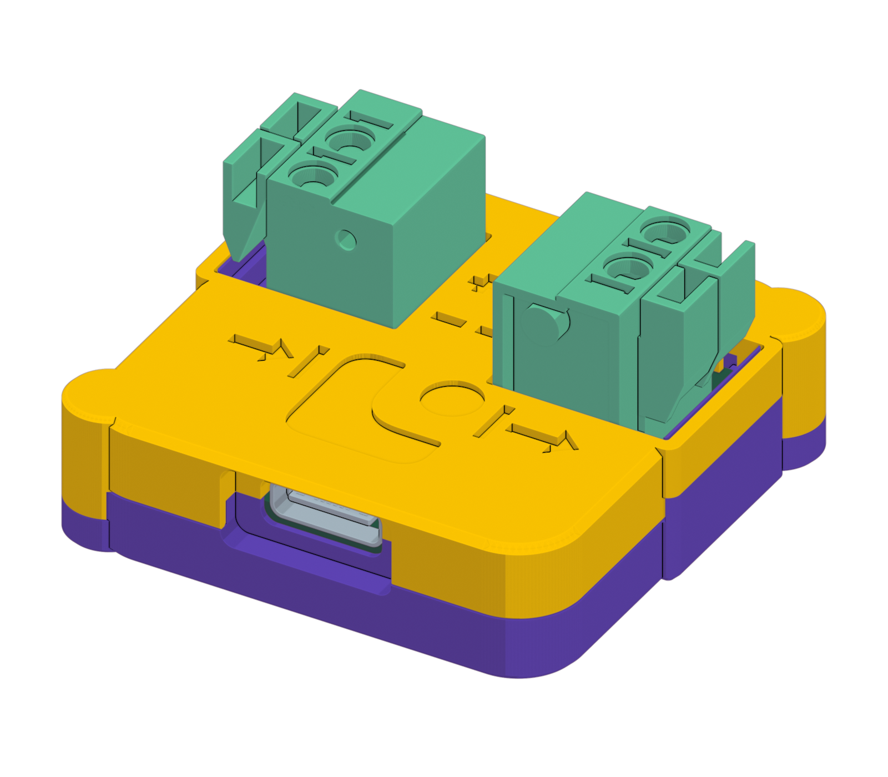

外观渲染示意。接线以实物及外壳的 + / −、输入和输出标记为准；不要仅凭左右方向判断极性。
3.3–28 V，电流不超过 3 A
关闭电源输出后再接线
核对 + / − 标记
只从这里取电
B 与 A 是不同的适配器
控制与通信，不给负载供电
标称直流工作电压
3.3–28 V
正常使用按此标称范围
最高建议电流
3 A
超过此电流可能损坏硬件
28 V / 3 A 工作点
≈ 84 W
按 P = U × I 换算负载功率
软件过压保护触发
VIN > 30.5 V
使用固件发布的有效测量值
过压保护自动解除，不等于自动重新供电；不需要额外的过压复位命令。最高建议电流为 3 A，请在外部电源上设置合适的限流。